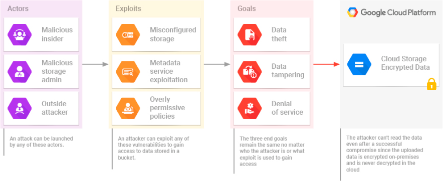

USE CASES
RESEARCH DATA DISTRIBUTION
When you attempt to share highly sensitive data stored on-premises in your data center, you face multiple
challenges:
Should you directly transfer the data to
mitigate potential data security risk?
Do you make use of cloud storage so you have to upload the data only once and
distribute it to multiple partners?
A direct transfer may not be possible depending on the size of the data and the corporate bandwidth at your
disposal.
On the other hand, using a cloud bucket may be very attractive, but you just don’t want to deal with an added
security risk.

That is where Transfer General comes in.
Transfer General will encrypt your data on-premises, allow you to maintain complete control over the data
encryption key, upload your encrypted data to a Google Storage bucket, and act as your distribution center.
Since only the encrypted data is uploaded into the bucket, you will eliminate any potential data security issue
stemming from a storage bucket misconfiguration or a rogue storage administrator.
You’ll be able to push the data stored in the bucket to multiple destinations where the data will be decrypted
for your intended audience.
You’ll be able to deny access to the data at any time with help of built-in cryptographic techniques.
Contact us